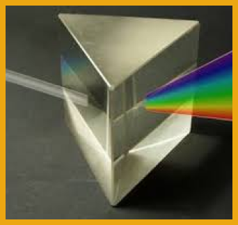
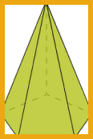

ÁREA DE PRISMAS
Prisma é uma figura espacial que possui duas faces poligonais opostas, paralelas e congruentes, denominadas bases, separadas por uma distância chamada altura. As demais faces possuem forma de paralelogramos, sendo os lados os segmentos que unem os vértices correspondentes das duas bases. O prisma é regular quando suas bases forem polígonos regulares.
PRISMA RETO
O prisma é dito reto quando as arestas laterais forem perpendiculares às bases. Neste caso as faces laterais serão retângulos.
Definições complementares:
Al → total da área lateral, que é a soma das áreas dos paralelogramos
Ab → área do polígono da base (vide fórmulas no artigo Quadrilátero - Cálculo
de áreas)
h → altura do prisma (distância entre as duas bases e perpendicular a elas)
AT = Al + 2. Ab
Volume do prisma:
V = Ab . h
PRISMA OBLÍQUO
Quando as arestas laterais não são perpendiculares às bases.
As fórmulas para cálculo das áreas e do volume continuam as mesmas, pois a altura é sempre a
distância entre as duas bases e perpendicular a elas ou ao plano que as contém.
PIRÂMIDES REGULARES
Pirâmide: Uma figura espacial que possui uma face poligonal denominada base, e faces laterais em forma de triângulos com um vértice em comum. A distância deste vértice até a base da pirâmide é sua altura. A pirâmide é regular quando sua base for um polígono regular.
PIRÂMIDES RETAS
A pirâmide é reta quando todos as faces laterais forem todas triângulos iguais. Neste caso a projeção do vértice da pirâmide sobre a base coincide com o centro geométrico da base.
Definições complementares:
Al → total da área lateral que é a soma das áreas dos triângulos laterais
Ab → área do polígono da base (vide fórmulas no artigo Quadrilátero - Cálculo
de áreas)
h → altura da pirâmide (distância entre a base, perpendicular a ela, e o
vértice)
AT= Al + Ab
PIRÂMIDES OBLÍQUAS
É aquela em que os triângulos que formam as faces laterais são diferentes ente si. Neste caso, a
projeção do vértice da pirâmide sobre a base não coincide com o centro geométrico da mesma.
As fórmulas para cálculo das áreas e do volume continuam as mesmas, pois a altura é sempre a
distância entre o vértice e a base, perpendicular a ela ou ao plano que a contém.
PIRÂMIDES E PRISMAS ESPECIAIS
Um prisma especial, por exemplo, é o cubo: trata-se de um prisma de bases quadradas e iguais às faces
laterais, ou seja, a figura possui seis faces iguais formadas por quadrados.
Uma pirâmide especial, por exemplo, é o tetraedro: trata-se de uma pirâmide com base triangular
regular e igual às faces laterais, ou seja, possui quatro faces iguais formadas por triângulos
equiláteros.